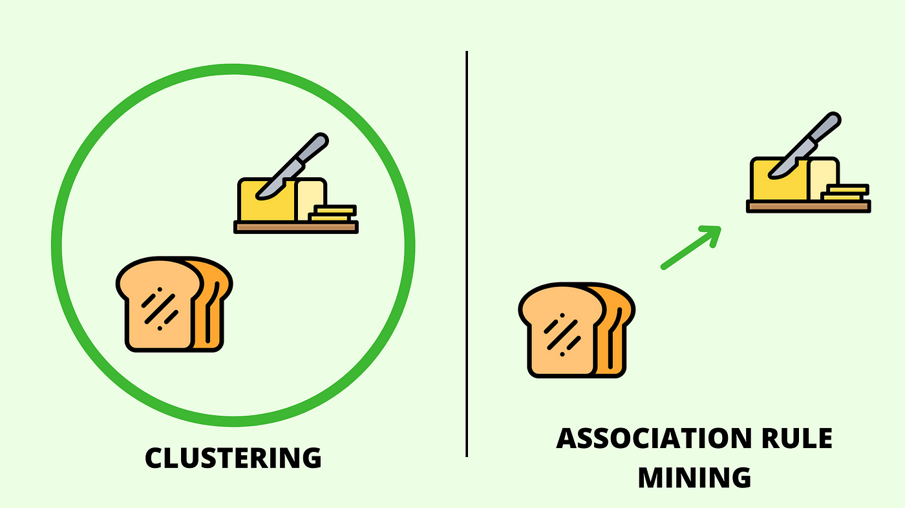
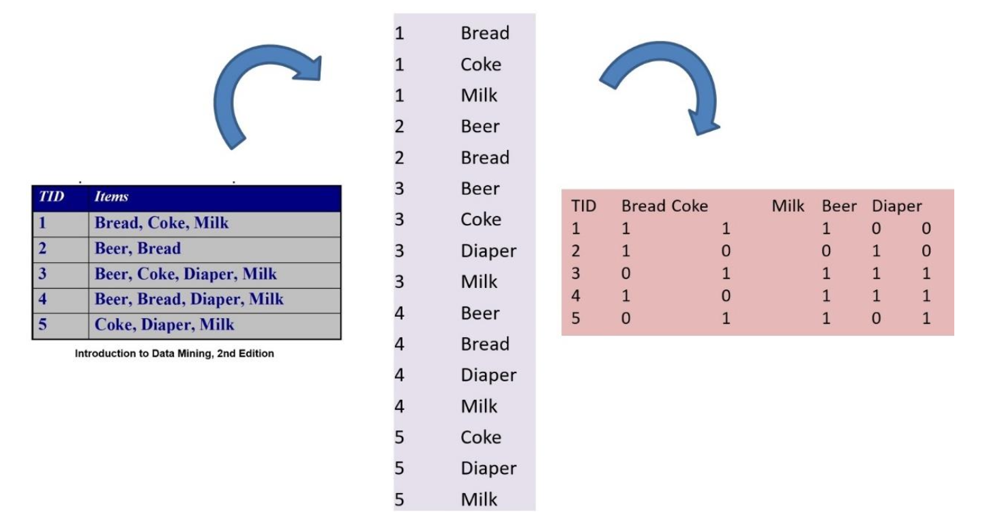
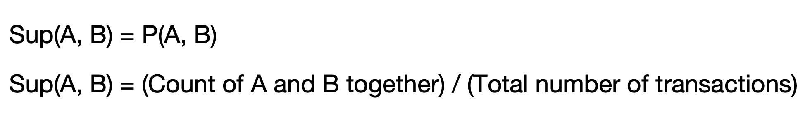
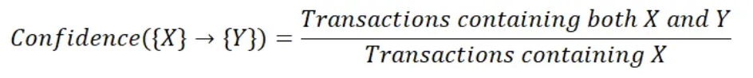

ASSOCIATION RULE MINING
OVERVIEW:
Association rule mining (ARM) is a unsupervised Machine Learning technique used to discover interesting relationships, patterns, or associations among variables in large datasets.
ARM is often applied to transactional datasets, such as market basket data, where each transaction consists of a set of items.
The above image represents Transaction Data in Basket (left), Single (center), and Matrix (right) formats.
Measures in ARM:
Let A and B are sets and assume association rule A => B.
- Support:
- Confidence:
- Lift:
-
If Lift (A, B) = 1 then P(A, B) = P(A).P(B) i.e, if Lift is 1, then A and B are Independent.
-
If Lift (A, B) < 1 then P(A, B) < P(A).P(B) i.e, if Lift is less than 1, then A and B are negatively correlated.
-
If Lift (A, B) > 1 then P(A, B) > P(A).P(B) i.e, if Lift is greater than 1, then A and B are positively correlated.
It measures how often an item in A and an item in B occur together relative to all the transactions.
It measures how often an item in A and an item in B occur together relative to transactions that contain A.
From the above, Confidence ≥ Support.
Lift is a measure of how much more likely items in Y is to occur when the items in X is present, compared to when it is absent. It is the ratio of the confidence of the rule, to the frequency of the items in Y in the whole dataset.

From the above, Lift ≥ Confidence.
Since we are looking for associations, we will consider only rules with Lift > 1.
Association Rules:
Association rules are logical implications that describe relationships between sets of items in the dataset. They are typically represented in the form of "if-then" statements, where the antecedent (A) implies the consequent (B).
Example: A => B
If an item A is purchased, then item B is likely to be purchased.
Apriori Algorithm:
The Apriori algorithm is a classic algorithm for association rule mining. It's specifically designed to extract frequent itemsets and generate association rules from transactional databases.
Steps:
- Generating Frequent Itemsets:
- Initialization: Start by identifying all unique items in the dataset.
- Support calculation: Scan the dataset to count the support (frequency of occurrence) of each individual item. Items with support above a predefined minimum support threshold are considered frequent 1-itemsets.
- Joining: Proceed iteratively to generate larger itemsets. In each iteration, join pairs of frequent (k-1)-itemsets to form candidate k-itemsets.
- Pruning: Prune candidate itemsets that contain subsets which are infrequent. This pruning step is possible due to the Apriori property, which states that if an itemset is infrequent, all its supersets must also be infrequent.
- Generating Association Rules:
- Rule Generation: For each frequent itemset, generate association rules by considering all possible combinations of items as antecedents and consequents.
- Rule Evaluation: Calculate teh measures such as confidence and support for each rule.
- Pruning: Discard rules that do not meet a minimum threshold measure.
PLAN
- Firstly, unlabelled transaction data with City and Weather details is required to generate association rules between cities and weather types.
- Next step is to read the unlabelled transaction data with city and weather and generate association rules with minimum support and confidence threshold values.
- Finally sort the rules and identify the top 15 rules by Support, Confidence and Lift.
- Also lets check top cities associated with snowy weather.
DATA PREPARATION
Association Rule Mining typically operate on unlabelled transaction data.
- Before Transformation:
- After Transformation:
- Transaction Dataset (Basket):
The below image shows the sample of data before transformation.

The below image shows the data after transformation into transaction data (Basket) and after removing labels. It shows city and its hourly weather type in 2017.
CODE
- ARM (R):
THRESHOLDS
- Minimum Support:
- Minimum Confidence:
Minumum Support for generating Top 15 rules overall and Top 5 rules for Snowy Weather is 0.0001. Low threshold value is due to 213435 transactions and each city has around 7000 transactions which is comparatively very less.
Minimum confidence for generating Top 15 rules overall is 0.1 and for generating Top 5 rules for Snowy weather is 0.01 due to comparatively less transactions containing snowy weather.
RESULTS
- Top 10 Frequent items:
- Top 15 Rules by Support:
- Top 15 Rules by Confidence:
- Top 15 Rules by Lift:
- Top 5 Rules for Snowy Weather by Confidence:
The above image displays Top 10 frequent items from the transaction data containing city and weather details. Clear weather is the most frequently found item in the transaction data.
The above image displays Top 15 rules by Support generated from the transaction data using Apriori Algorithm. Las Vegas and Clear weather occurred together most times in the transaction data.
The above interactive network diagram depicts Top 15 rules by Support. Size indicates Support. Higher the size of node in the network higher its Support is and similarly color indicates Confidence.
The above image displays Top 15 rules by Confidence generated from the transaction data using Apriori Algorithm. Las Vegas and Clear weather occurred together most times in the transactions that contains Las Vegas.
The above interactive network diagram depicts Top 15 rules by Confidence. Size indicates Support. Higher the size of node in the network higher its Support is and similarly color indicates Confidence.
The above image displays Top 15 rules by Lift generated from the transaction data using Apriori Algorithm. Other weather type and Los Angeles will occur together more frequently than would be expected if they were independent.
The above interactive network diagram depicts Top 15 rules by Lift. Size indicates Support. Higher the size of node in the network higher its Support is and similarly color indicates Confidence.
The above image displays Top 5 rules for Snowy Weather by confidence generated from the transaction data using Apriori Algorithm. Pittsburgh and Snowy weather occurred together most times in the transactions that contains Pittsburgh.
The above interactive network diagram depicts Top 5 rules for Snowy Weather by confidence. Size indicates Support. Higher the size of node in the network higher its Support is and similarly color indicates Confidence.
CONCLUSION
The exploration of city-to-weather associations uncovers profound insights into how various urban landscapes are influenced by weather dynamics. Through this investigation, distinct patterns associating specific cities with particular weather profiles are unveiled, revealing the unique climatic identities of each location. This comprehension deepens the understanding of how weather profoundly impacts urban life, shaping daily routines and informing long-range urban planning strategies. Furthermore, understanding the intricate city-weather associations provides insight into both the obstacles and potential for urban growth. Armed with this knowledge, urban planners and politicians can proactively protect cities against negative weather impacts while capitalising on favourable conditions to improve quality of life and sustainability. Finally, the investigation emphasises the dynamic interaction between urban surroundings and natural factors, establishing the framework for resilient, adaptable cities that can thrive in the face of changing climate realities.